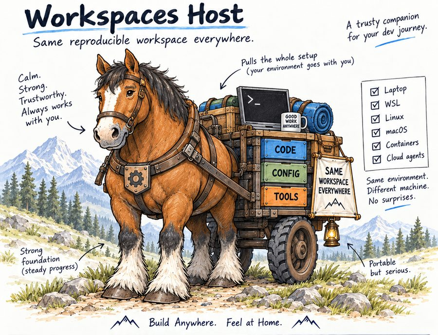

Get started on Windows 11
Debian from the Microsoft Store, one pasted line, and you are running. Thirty minutes, copy and paste.
Open VS Code and take over
Install VS Code, open your workspace in Debian, set it up, and press Learn.
Troubleshooting
If something stops you, find what you see here: the cause and the fix.
Reference
Every command, kit, file and setting, generated from the code so it is never out of date.
The whole guide on one page
Good for reading straight through or searching with your browser's find.
Download the PDF
A typeset copy of the guide. Present only when the PDF converter was installed where the site was built.